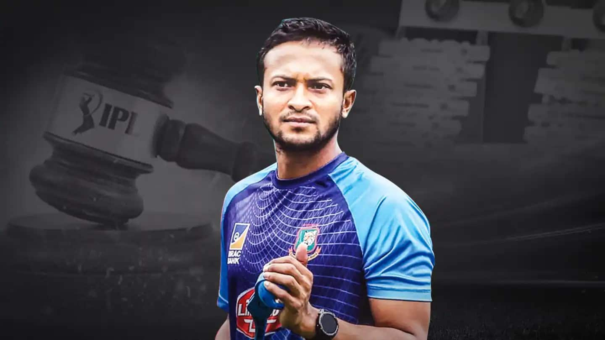
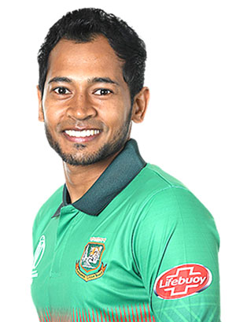

Sakib
Shakib Al Hasan is a Bangladeshi cricketer and current captain of the Bangladesh national cricket team in Tests and T20Is. He is known for his aggressive left-handed batting style in the middle order and controlled slow left-arm orthodox bowling.
Mushfiq
Mushfiqur Rahim born 9 May 1987 is a Bangladeshi cricketer and the former captain and vice-captain of the Bangladesh national cricket team. He is a right-handed middle-order batsman and wicket-keeper in the Bangladesh Cricket Team.